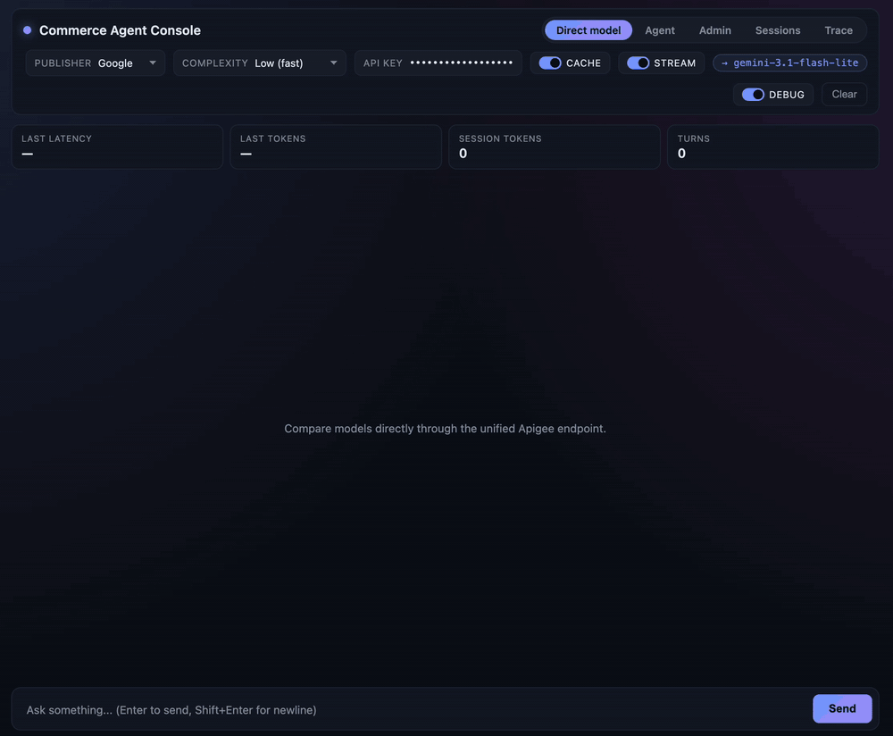
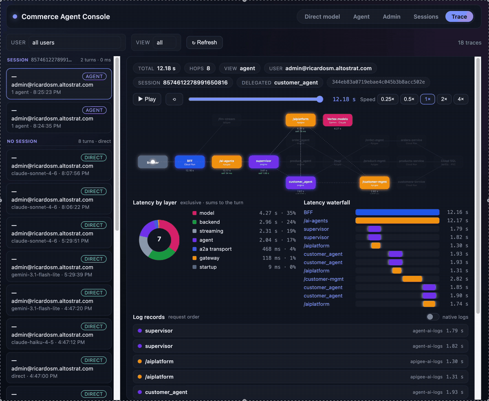
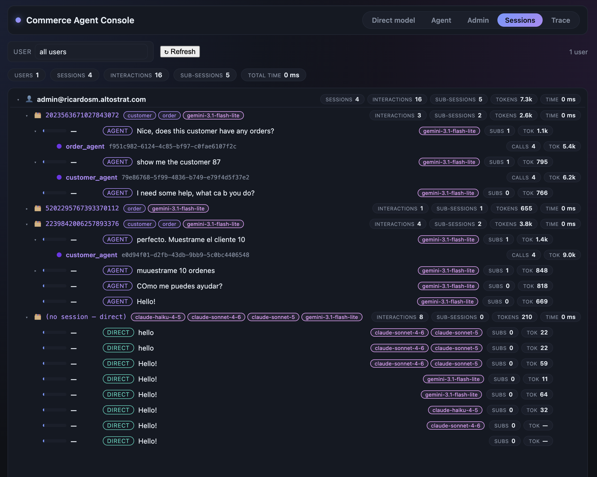
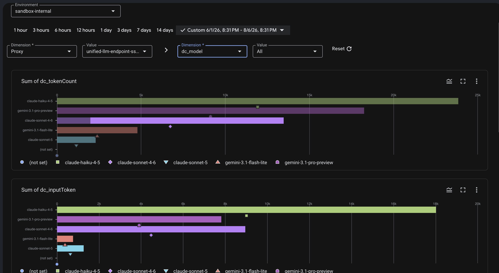
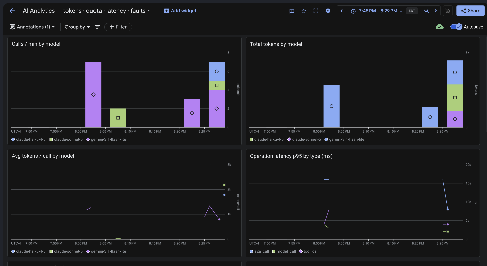

Onde aconteceu de fato o pico de 12 segundos de latência — ou o erro 500?
🗂️Silos dispersos
Logs espalhados entre projetos e fronteiras de serviço, cada um no seu próprio formato.
⏱️Sem relógio comum
Métricas de latência com formatos distintos e precisão inconsistente — nada fecha.
✂️Contexto de rastreamento quebrado
O traceparent se perde nos saltos A2A e nas chamadas de ferramentas MCP.
Complicação · Realidade de Segurança
Protótipos de agentes trazem vulnerabilidades que bloqueiam sua adoção
🎭Identidade falsificável
Confiar em headers crus como X-User-Email em vez de verificar JWTs assinados. Qualquer um pode ser qualquer um.
👑Service accounts todo-poderosas
Todos os agentes compartilhando uma identidade superprivilegiada com acesso ilimitado entre projetos.
📡Backends públicos
Microsserviços internos aceitando tráfego da internet, protegidos apenas por uma API key no perímetro.
🔑Senhas em variáveis de ambiente
Credenciais de banco de dados em texto puro em vez de autenticação IAM de banco de dados.
Complicação · Realidade de Engenharia
Acoplamento frágil, ambientes irrepetíveis e documentação que acaba
🧩Acoplamento frágil
Cada deploy gera um novo engine ID. Se você o fixa no código, redesplegar um especialista quebra o supervisor.
🌀Drift de configuração
Cliques no console e IDs de projeto fixos no código: funciona num projeto, falha no próximo.
🗺️Bordas sem documentação
Streaming A2A no ADK 2.3, SSE por um gateway, PSC bidirecional — sem referências funcionais em lugar nenhum.
A Pergunta Arquitetural Central
Dá para construir um sistema multiagente em que cada chamada — modelo, ferramenta, agente, API de negócio — seja governada, atribuída, rastreada e privada…
e o stack inteiro seja reconstruído a partir de três projetos vazios?
Resposta · A Arquitetura
Uma topologia, três projetos, cada caminho passa pelo gateway
🖱️ arraste ou role para mover · pinça / Ctrl+scroll para zoom · clique duplo para aproximar · Ajustar para redefinir
Resposta · A Arquitetura
Três projetos, uma responsabilidade cada — separação auditável
Cunha tokens do Google upstream conforme a direção
🏪Projeto Backend
3 microsserviços FastAPI no Cloud Run
Cloud SQL MySQL — autenticação IAM, sem senhas
ALB interno regional, roteado por caminho
Nenhuma superfície pública — só PSC
Resposta · Plano de Governança
Cada chamada cruza um único gateway — modelos, ferramentas, agentes, APIs de negócio
Caminho-base
Na frente de
Credencial do chamador
Credencial upstream (cunhada pelo Apigee)
/ai-agents
O engine supervisor
x-api-key do app BFF
GoogleAccessToken
/aiplatform
Chamadas a modelos pelos agentes
x-api-key própria de cada agente
GoogleAccessToken
/llm-stream
Chat direto — Gemini e Claude, SSE
x-api-key pessoal do usuário
GoogleAccessToken
/mcp
Catálogo e execução de ferramentas MCP
x-api-key do especialista
Roteamento MCP privado
/*-management
Serviços de e-commerce (3)
Servidor MCP
GoogleIDToken → ALB interno
Credenciais divididas por direção: consumidores apresentam keys; o Apigee cunha tokens do Google upstream. 7 proxies, uma única linguagem de políticas.
Resposta · Plano de Governança
Keys vinculadas à identidade, cotas aplicadas antes de o modelo executar

🪪Vínculo key ↔ identidade
O owner_email da key precisa coincidir com a identidade IAP verificada. Uma key roubada recebe 403.
⛔Cotas na borda
100k tokens/hora por agente · 10k/5 min por usuário — contadas do uso real, rejeitadas antes da chamada ao modelo.
🔀Dois publishers, uma política
Gemini e Claude atrás do mesmo endpoint, mesmas keys, mesmas cotas, mesmo logging.
Resposta · Plano de IA
Especialistas pequenos de propósito: um domínio, uma key, um subconjunto de ferramentas
📦order_agent
Engine próprio · service account própria
Key do Apigee própria via Secret Manager
Só as ferramentas MCP de pedidos
🏷️product_agent
Engine próprio · service account própria
Key do Apigee própria via Secret Manager
Só as ferramentas MCP de catálogo
👤customer_agent
Engine próprio · service account própria
Key do Apigee própria via Secret Manager
Só as ferramentas MCP de clientes
4agent engines
2publishers de modelos
1 keypor identidade
0credenciais compartilhadas
Resposta · Plano de IA
Delegação com streaming via A2A — e descoberta que se autorrepara
📡Streaming de tokens A2A (ADK 2.3)
Proxies RemoteA2aAgent com client factory de streaming + conversor SSE.
A UI revela a delegação no instante em que transfer_to_agent dispara.
Os hooks exatos estão documentados — uma das bordas sem documentação, resolvida.
🔄Autorreparação via Registry (TTL ~60s)
Especialistas se autorregistram no Agent Registry ao serem implantados.
A cada turno, o supervisor re-aponta para o engine vivo mais recente a partir de um cache com TTL.
Redisponibilize especialistas o dia todo — zero redeployments do supervisor.
Acoplamento frágil — resolvido: o engine ID é resolvido em tempo de execução, nunca fixado no código.
Resposta · Plano de IA · Segurança
Acesso a agentes por usuário, fail-closed, revogável com um clique
🔍Avaliado a cada turno
Um before_agent_callback filtra os subagentes contra o ACL do usuário no Firestore em cada consulta — mudanças de permissão valem já no turno seguinte.
🚪Fail-closed por padrão
Sem registro no Firestore → nenhum acesso a agentes. Um before_tool_callback de bloqueio duro é a rede de segurança intransponível.
🎛️Administrado ao vivo
Admins editam os vínculos usuário→agente na UI. Sem mudança de código nem redeploy — e os especialistas são travados por IAM para que o filtro não possa ser contornado.
Resposta · Segurança e Redes
Privado por construção: identidade verificada na entrada, tokens cunhados na saída, zero senhas
🪪Identidade IAP verificada
O BFF verifica o JWT assinado do IAP — nunca os headers falsificáveis. Esse único e-mail verificado vira o user ID, o sujeito do ACL, o dono da key e o campo de usuário em cada log.
🔒PSC bidirecional
IA → Apigee por uma interface PSC; Apigee → backend por um service attachment PSC. O tráfego nunca sai do backbone do Google.
🛂Serviços só-IAM
O Cloud Run do backend aceita apenas a SA invocadora dedicada do Apigee, cujo único poder é run.invoker sobre esses três serviços.
🚫🔑Banco de dados sem senhas
Autenticação IAM do Cloud SQL: a service account do runtime é o usuário do banco. Zero senhas em todo o stack.
Resposta · Observabilidade
Um trace ID do navegador ao banco — quatro logs, um esquema, um painel
Log nomeado
Escrito por
Contém
front-ai-logs
O BFF
usuário, vista, mensagem, decomposição de latência
apigee-ai-logs
Os 7 proxies
usuário, app, modelo, contagem de tokens, estado de cota, 4 timestamps
agent-ai-logs
Os 4 engines
agente, sessão, chamadas a modelos e ferramentas
services-ai-logs
3 microsserviços
serviço, verbo, caminho, status, latência
Cada entrada carrega o mesmo traceparent W3C, cunhado no BFF e propagado por IAP, gateway, engines, saltos A2A e MCP. Um filtro = a transação completa.
▶ Demo ao Vivo #1 · Trace Explorer
Reproduza qualquer transação salto a salto, com latência real medida

Construído puramente lendo os quatro logs — o pacote animado permanece em cada salto na proporção da sua latência medida.
Resposta · Observabilidade
Dos logs à prestação de contas: usuário → sessão → trace, navegável

🗂️Histórico por usuário
As sessões persistem e podem ser reproduzidas; admins navegam usuário → sessão → trace com contagens acumuladas.
➕Zero telemetria nova
As vistas Sessions e Trace são pura releitura dos quatro logs — a camada de observabilidade não custa nada a mais.
▶ Demo ao Vivo #2 · Analytics de Tokens
Tokens por modelo, agente e usuário — sem pipeline de ETL

Relatórios personalizados do Apigee — provisionados automaticamente sobre os Data Collectors do gateway.

Cloud Monitoring — métricas de plataforma atualizadas em minutos a partir de métricas baseadas em logs.
Resposta · Replicabilidade
O stack inteiro se reconstrói a partir de três projetos vazios — e prova isso
📜Declarado, não clicado
demo-environment.yaml — o único arquivo que nomeia projetos, regiões e identidade admin.
Três manifestos declaram o estado desejado; sete ferramentas convergem o estado real para eles.
A mesma gramática em todas: --check · --dry-run · confirmação · --apply.
🧪Blindado por testes
O build falha diante de IDs de projeto fixados no código — em código e em docs.
Contratos entre manifestos verificados: SAs, secrets, audiences.
Roda offline em segundos — sem credenciais do GCP.
Auditar um ambiente vivo é uma flag: --check imprime um relatório honesto de drift — OK, DRIFT, MISSING — para cada recurso.
Resposta · Conclusões
Seis padrões que valem a pena levar — mesmo que você nunca implante a demo
1️⃣Streaming A2A, ADK 2.3
Os hooks funcionais de client factory + conversor SSE.
2️⃣Autorreparação via Registry
Redeployments de especialistas com zero acoplamento ao supervisor.
3️⃣Apigee como gateway de LLMs
Keys vinculadas à identidade, cotas de tokens, roteamento de dois publishers.
4️⃣Rastreamento de ponta a ponta
Um traceparent que sobrevive a IAP, A2A e MCP.
5️⃣Provisioners check/apply
Ferramentas convergentes e honestas com o drift, auditáveis com uma flag.
6️⃣Analytics de tokens sem ETL
Data Collectors → relatórios personalizados. Sem pipeline.
Open Source · Apache 2.0
Sim — e você pode reconstruir tudo por conta própria
Cada chamada governada, atribuída, rastreada e privada — a partir de três projetos vazios, com os componentes do GCP que você já tem.